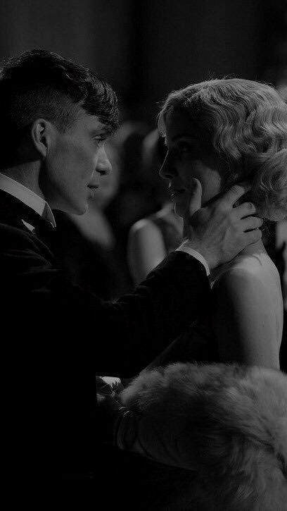
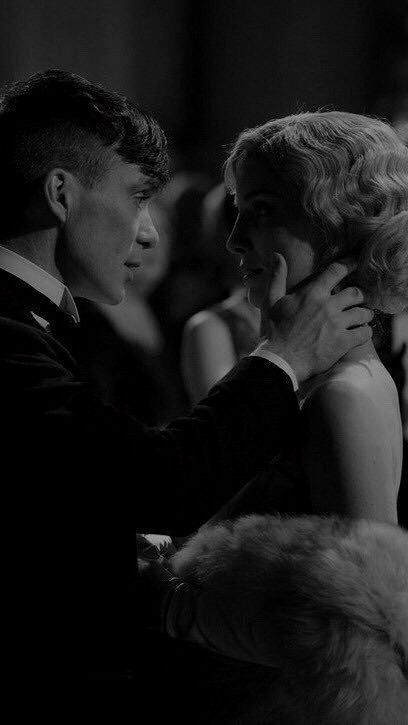
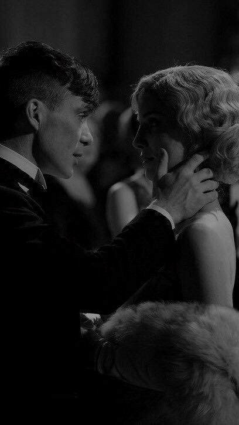
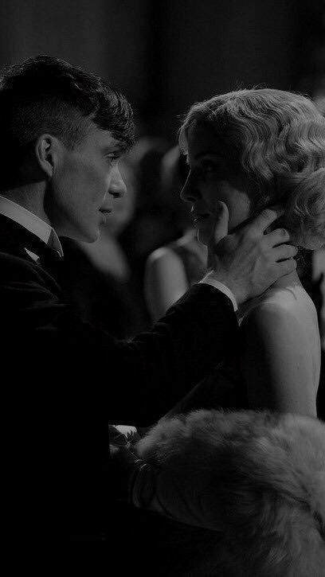

Peaky Blinders is a crime drama series set in Birmingham, England in 1919. The series revolves around Thomas Shelby, the leader of the criminal gang called Peaky Blinders, in the post-World War I era. It focuses on the Shelby family's quest for ambition, power, and revenge. Under Thomas Shelby's leadership, the gang deals with businesses such as illegal gambling, alcohol, and arms trafficking. As a smart, strategic, and ruthless leader, Thomas tries to protect his family from all kinds of dangers while also trying to grow the gang even more. The series depicts the dynamics of the Shelby family and the difficulties they face, while also dealing with the social and political atmosphere of the period. Thomas and other characters, who have experienced the traumas of World War I, struggle with the burdens of the past. Arthur Shelby's anger problems, Polly Gray's strong leadership, John Shelby's courage, and Michael Gray's ambition enrich the series' character diversity. Peaky Blinders draws attention with its character depth, historical background, and strong visuals. The series, which blends both crime and drama elements, has become a cult production over time. It has also been highly acclaimed for its music choices and visuals that reflect the atmosphere of the period.
Thomas Shelby
Thomas Shelby is the leader of the Peaky Blinders gang based in Birmingham in the Peaky Blinders series. He is a smart, strategic and ambitious character. After returning from World War I, he aims to expand his family's business. By establishing political connections, he directs the gang to illegal gambling, alcohol and arms trade.
Arthur Shelby
Arthur Shelby is one of the founding members of the Peaky Blinders gang in the Peaky Blinders series and Thomas Shelby's older brother. He is an emotional, unstable, and violent character. Although loyal to his family, he has anger management issues. He generally represents the "power" side of the gang.
John Shelby
John Shelby is one of the important members of the Peaky Blinders gang in the Peaky Blinders series and the younger brother of Thomas Shelby. He is notable for his brave, loyal and tough nature. He is deeply devoted to his family, but sometimes acts without thinking. He takes an active role in the gang's field operations.
Polly Gray
Polly Gray is the matriarch of the Shelby family and the aunt of Thomas Shelby in the Peaky Blinders series. She is responsible for the financial management of the family business. She is an intelligent, strong and determined character. She is an important strategist in the gang's business, while also being a protective figure for her family.
Michael Gray
Michael Gray is the son of Polly Gray in the Peaky Blinders series. Although he initially prefers to stay away from his family's business, he gradually becomes involved in the gang's business. He is a successful, ambitious, and intelligent character in the business world. He occasionally clashes with Thomas Shelby, and struggles for power over his family's future.

Lizzie Shelby
Lizzie Shelby is Thomas Shelby's wife in the Peaky Blinders series. Initially known as someone who does different jobs, Lizzie eventually joins the Shelby family and marries Thomas. She is a smart, strong, and loyal character. While she remains devoted to her family's work and home, she sometimes experiences internal conflicts.
Birmingham, 1919. Thomas Shelby returns from the war to take control of the family business. The local police are on the hunt for a stolen cache of guns.
Thomas Shelby plans to take his family's legal and illegal businesses nationwide. A dangerous enemy from the past returns to Birmingham.
As the Russians' behavior becomes increasingly erratic, Tommy finds himself in a dangerous situation. Alliances are shifting, and betrayal is in the air.
The Shelby family faces its greatest crisis yet. Tommy prepares himself for the fight of his life as his enemies close in.
Tommy's political career reaches a critical point. The Wall Street Crash brings new opportunities and new dangers for the Shelby family.
My all-time favorite episode that showcases the best of Peaky Blinders.